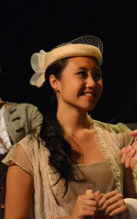
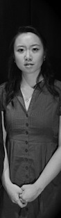
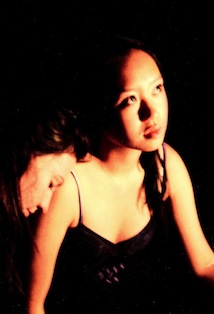

Chloe Hung
Chloe Hung has directed short dramatic films, and directed and acted in numerous plays. She is in her final year at King's College in Halifax, Nova Scotia, where she will graduate in the spring of 2012 with honours in Early Modern Studies and English. She has studied at The London Academy of Music and Dramatic Art, and at the Shakespeare School at the Stratford Shakespeare Festival. She currently divides her time between Halifax and Toronto.


